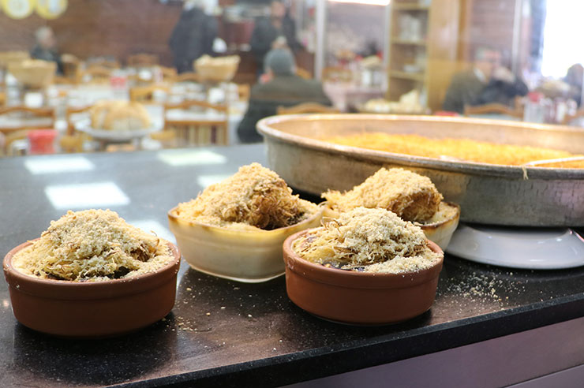

Turbo Sütlaç
Rize'nin, eşsiz lezzetine doyamayacağınız bir tatlısı daha; Turbo tatlısı. Turbo'nun özü sütlaç olsa da üzerine konulan kadayıf ile taçlanan lezzet, vazgeçilmez tatlardan biri haline geldi. Doğal sütten yapılan sütlacın içine konulan yöreye has süt ve tereyağları ile birlikte ortaya enfes bir lezzet çıkıyor.

Tarif
Malzemeler
- 1 litre süt
- 1 su bardağı şeker
- Yarım su bardağı pirinç
- 1,5 yemek kaşığı buğday nişastası
- Bir tutam tuz
- 1 adet yumurta sarısı
- 1 paket vanilya
- 150 gr kadayıf
- 1 yemek kaşığı tereyağı (tepeleme olmasın)
- 1 yemek kaşığı toz şeker
- 1 çay bardağı ceviz içi
- 2 cay kaşığı tarçın
Yapılışı
- Pirinçleri 2-3 su yıkayın, orta boy bir tencereye alın üzerini geçecek kadar su ve bir tutam tuz ilave edin.
- Şişip yumuşayana kadar orta ateşte kaynatın.
- 1 litre sütten küçük bir kaseye süt ayırın içine nişastayı ve vanilyayı ekleyin, karıştırarak eritin.
- Pirinçler yumuşayınca sütü ve şekeri tencereye katın, kaynayana kadar orta ateşte karıştırın.
- Tencerede kaynayan süte ayırdığınız kasedeki sütün tamamını ekleyin, 5-6 dakika daha karıştırarak pişirin.
- Ocağı kapatın, sütlaçtan 1-1,5 kepçe kaseye alın ve yumurta sarısını ekleyerek çırpın.
- Kalan sütlaçları küçük kaplara bölüştürün, üzerine yumurtalı sütlaçtan gezdirin.
- Kapları önceden ısıtılmış 200 derece fırın tepsisine yerleştirin ve yarılarına gelecek kadar su koyarak fırınlayın.
- Sütlaçların üzeri kızarınca fırından alın, ılık yada soğuk servis yapın.
- Kadayıfın hazırlanışı; önce tereyağını bir tavada eritin ve ufaladığınız kadayıfı kısık ateşte kavurmaya başlayın.
- Kızarmaya başlayınca da ceviz ve şekeri ekleyin.
- Biraz daha kavurun en son tarçını da ekleyip sütlaçların üzerine serpin.
.png)